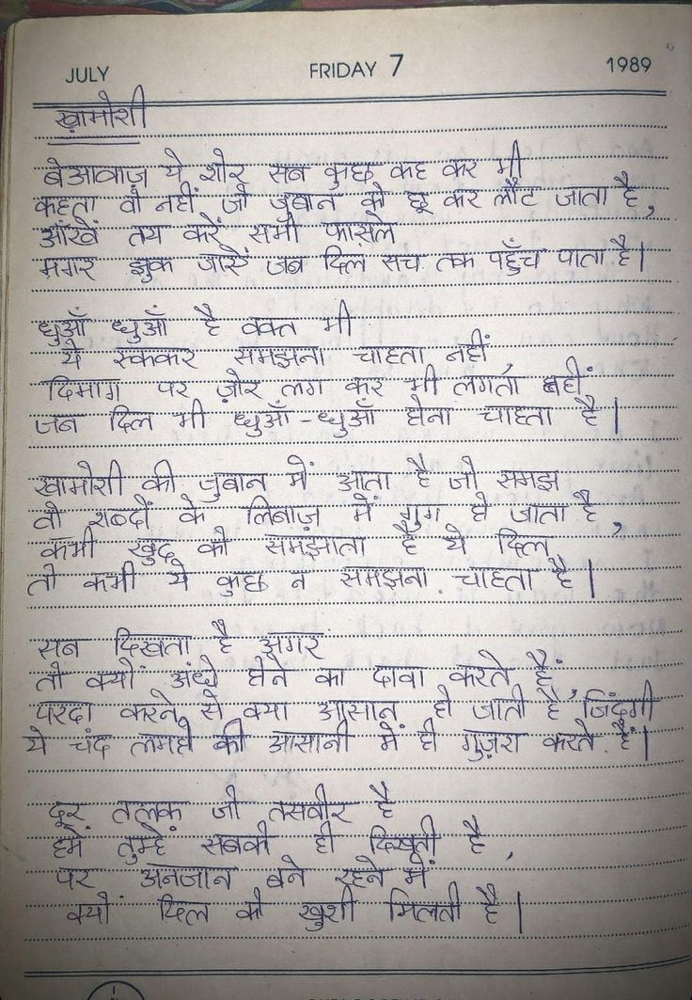

File: hin_sample_05.jpg

⏳ Pending Integration...
JULY FRIDAY 7 1989 ख़ामोशी बेआवाज़ ये शोर सब कुछ कह कर भी कहता वो नहीं जो ज़ुबान को छू कर लौट जाता है, आँखें तय करें सभी फ़ासलें मगर झुक जाएँ जब दिल सच तक पहुँच पाता है। धुआँ धुआँ है वक्त भी ये स्वकर समझना चाहता नहीं दिमाग पर ज़ोर लग कर भी लगता नहीं जब दिल भी धुआँ-धुआँ होना चाहता है। ख़ामोशी की ज़ुबान में आता है जो समझ वो शब्दों के लिबाज़ में गुम हो जाता है, कभी खुद को समझाता है ये दिल तो कभी ये कुछ न समझना चाहता है। सब दिखता है अगर तो क्यों अंधे होने का दावा करते हैं; परदा करने से क्या आसान हो जाती है ज़िंदगी ये चंद लम्हें की आसानी में ही गुज़रा करते हैं। दूर तलक़ जी तस्वीर है हमें तुम्हें सबकी ही क़िस्मती है, पर अनजान बने रहने में क्यों दिल को ख़ुशी मिलती है।
JULY FRIDAY 7 1989 JULY खामोशी बेआवाज़ ये और सब कुछ कह कर भी कहता वो नहीं जो जवान को छू कर लौट जाता है, आंखें तय करें समो फासले मगर झुक जाएँ जब दिल सच तक पहुँच पाता है। धुएँ धुआँ है वक्त भी ये रुककर समझना चाहता नहीं दिमाग पर ज़ोर लग कर भी लगता नहीं, जब दिल भी धुएँ-धुआँ होना चाहता है। खामोरी की जवान में आता है जो समझ वो शब्दों के लिबाज़ में गुग़े हो जाता है, कभी खुद को समझाता है ये दिल तो कभी ये कुछ न समझना चाहता है। सब दिखता है अगर तो क्यों अंधे लेने का दावा करते हैं, परदा करने से क्या आसान हो जाती है जिन्दगी ये चंद लगने की आसानी में ही गुज़रा करते हैं। दूर तलक जो तसवीर है हमें तुम्हें सबको ही दिखती है, पर अनजान बने रहने में क्यों खिल को खुशी मिलती है। (No text detected)
JU ही .. FRIDAY 7 se SS ना ागग_गल६्ल8ग = । है Seay aS जोर तर ae नीली ee 7 q Sunt gar heer eat ee हू की gee ते लिन मी जाग में जाता । ही | ay at ATTA Sear ‘ कभी मे कथा a rea ate S| लाश ge रहे सा 78 a
सा ESS लत ——S So Peg ae 2 £ निज: अिविलेकिनेक a ee मलिक 8 ere aaah Wr eee Ho ae te yee Pa विदा SULY: a ee i nie TER Sn oy iH: Sn 7 VA Sg Bec PROT BESTE ENE EES gs STs aa | a ss = SE ee pete dati ee = es ei ta | ee मा ली saat a PO Reh (ci ato rep cne ae hth nile tee She ः न ढ न पलट CE | IK of pies जा वी न ec a IME eee ae । Sos ae aE OTE POUT Se 2 SRR, = aN 222 rapes MS 80037 % के ae ध Eins BERN Gm bean ea Bs ee es 7 Pe OS ce Bel स्व CE deer dae eae =e x Sot 27227 7275 62 म मिट tabi ae भय RR ey aM tt aay Sone eee ene a i a aaa lieben ene ae | BRE? Severe So Sree es हु ak hlecoie es | Seay aoe जोर आग Jeane Cte te 8 Soom ee as Nae a aie ocean hos er dar a न हि le 2 पर a 2५ BN 2 क्गगपसा्रण प्ले आफ िजल Seely | Nok oe लक Pee LATTER: 70 जवान गा ee : न सम ल्दो (2 620 Sree Sa Set ४ कम 5 Sesser ae eg oF Ls renee ८72 00008 00 een eee ue Ree eee artes antes Bat aA ST: S86, ence SES Set SIC | ECU Sale 2h Stes SE Srey ial ५ कर रथ 0 We las . sar Pesen Seeatcen 2 A eens ES, 52027 ee asa ea: ba er Rea | जाए oe Gade [2 62070 ५ ली aes os SSR 52222: 22720 ला Salas Ee tt EN 4 aaa i sean Qe Sen aa Gar sen oy NUE flake. ; Bae हल a : eS MENS Ee CAT A aN et ie Z A Ste GOSS pat it a as Sr sees iced Page ie ayer करत | : = eae oe ४० आन किक कलम चल ८755 “ee be = oor : 2 ae ae ae 0८ गे ee oars sae "जता qs as Sey a ae Soe or a ee oe
FRIDAY JULY झुक कर लगता क्ल ध्युआ Gis खामोरी लिनाज़ ठ्दों कुट्ट सन प् जिदग्ग असठ
❌ OCR Failed
उपास्न।
गण्ईे खाव्नीशी तराथिनिर्य । गिपठिश् धरेआाटिनारन वुदः मैँेँ कुँधेवूँ तैर्ट गै्रे कैहएू। वौ नहे सुड्े खौडरँबाटँ ट्वरे क्शलीर्टि गाा उगर्ठों गाश कैं्श्ूँ सर्मीं ओ-डति गँबाई वुुकों आई गगटें दिल एँेँ रवि पहुंचं पाताहैग हेई रैगेँ दिगग्चागू खेधुं है वैंविरता मी १िश रैंवेंकैकरें सैँवेँझेदेगीं चार्टता गांटोँ ख़ि नै ख़ंहेँ रेगंठगे कैकुहँ । रुगता बर्ध गाहेॉं दिल थ्ी सुधुंआं रधुज्ा हगना रैंगे्टिंगे रंवंनेशि क़ी बुबानू मीं अँगूँता है ज़ ईवदञं न्ीगी वीं रशबर्दो ़९ कै लिबाज निँ झमइमातां न र्वैं श्रतॉ हे दिल् गैचोर्टती हुगुड ज़ी नै वत्भीं ती की ईैंगगाईरनों कभी सुई्व ऊर्टीँ १ूँड है दिखतः नै खुगर नसऽ तॉ बैँसँगीँ ऊगंडरें धेबे कें पंनें। ॾ कैर्ते रेवि स्रदं केरनेय रैंगेग कंमो डैग्णेगीज्ञ ४४ ई हे आता ई न्ठ ईै० मैँध्ध्धा थे। चादः रतेगंद्टीं बशा आरस्राजनां ट गुज्ठारा कतरहेंग फुई ठठूवि जी है तुमहँ रैविव हू न० तसग़दोर हही रूनद फै-रू ड व्न्या डैनों्गर्ओं घिरल को वैले हे इरइ्ड स्पे न्ी खुशी मिताती हैँ
खामीशी बेआबाज़ म शोर सँब बूछ क्ट कं लॉटजाता मी है कहना छाँ गा तथ नहीं-ंजीययूबानं करेंँ सरमी। फासले खूी छूकर थूं कर मगार आँखें झुकं जारे जब्न विलं संच तकं पहुँच पात्ता हो ह धुओँ धुुओं च बक्त गी चा्हवा जासें दिमागा यँ र सककर पैरं शोऱ समझला लाग करी थर लगता बहीं जब विलं ची धुओँंए धधओँंँ जना चा्ह्वा खामोशी की-ुबान की जूबान मं आता आता हजों समझ बी-शबदों ती श़ंब्दं के बे काँ ॉँ लिंबाज़ समंझाता ग मे-गुग गुग मेँ रँ क विल जाँताँ तो--कभीँ कमी कमीँ छूबूद त कुछं नैं समझनां हैं चाधवा हेँ सॉब दिखता त अग का धवा करते तौ वथीं करनें अंधें त चमा प्े्ने क असान्न जं य जाती हे-ए जिंदूरगी ग परदी लमये खी आसानी ंवं गे हीं हं गुज़रा करतेंः त दूर बललक जील तसवीर छिबूती थ चे तँमेँ रँे तुमँ्हें। सबकी बने ही गी गू ज सक्यों पर ज-- अनजान छित्ल को क खुशी मिंतती हच ह